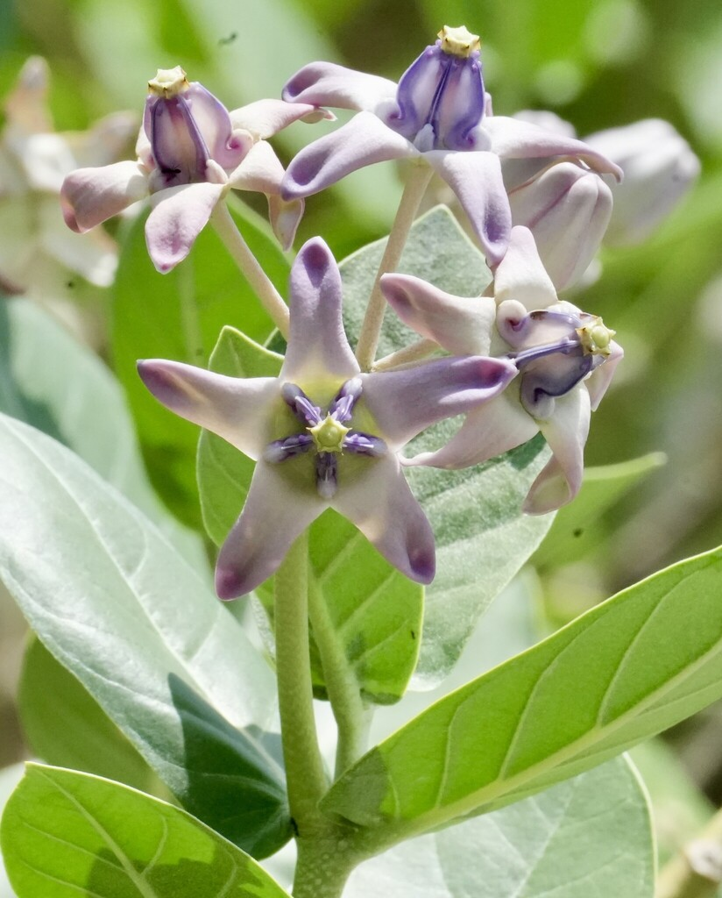

- The caterpillars that feed here don't just eat this plant — they weaponize it. Monarch and Queen larvae absorb its cardiac toxins and carry that chemical armor into adulthood, making themselves poisonous to birds.
- Its common name 'Bowstring Hemp' isn't decorative: the bark fibers are genuinely strong enough to make rope, fishing nets, and bowstrings, and have been used that way across South Asia for centuries.
- Queen Liliʻuokalani, Hawaii's last reigning monarch, favored these flowers above all others and wore them strung into leis — drawn, it's said, to the little crown at the center of each bloom.
- This plant arrived in Hawaii in the 1880s as the purple-flowered form; the white variety followed about thirty years later. Both naturalized readily, and both now feed Hawaii's resident Monarch population.
Native to South Asia and Southeast Asia — India, Sri Lanka, Bangladesh, Pakistan, and neighboring regions — and widely naturalized across the tropics. Grows naturally in dry, open, disturbed ground, roadsides, and sandy coastal soils.
- The Giant Milkweed is one of the most generous butterfly plants in the collection — and one of the most photogenic, with thick, pale silver-green leaves and clusters of waxy, crown-shaped lavender-and-white flowers. At Palma Sola it does double duty as a greeter: the specimen by the office welcomes visitors walking up from the parking lot, and a second large plant rings the butterfly garden.
- Both are propagated regularly from cuttings, which this plant does with unusual ease — a snipped stem stuck in moist soil roots readily. Each inflated seed pod holds 350 to 500 seeds, each riding a tuft of silky white fibers, so it also spreads on the wind with great efficiency.
- There's a fitting bit of symbolism in a milkweed serving as a welcomer. Known traditionally as the Crown Flower for the distinct shape at its center, these blooms are celebrated in Hawaii for making welcoming leis. At Palma Sola, this welcoming tradition is quite literal, greeting guests the moment they arrive.
- The genus name Calotropis comes from the Greek kalos ('beautiful') and tropis ('boat keel'), describing the shape of the flower parts; gigantea simply means large.
- The plant has a deep history in traditional South Asian medicine and material culture, where its remarkably tough bark fibers earned it the durable nickname Bowstring Hemp.
- Every part is toxic, so none of the medicinal uses should be tried at home.
- A note on its milkweed status: this is a non-native milkweed. It feeds Monarch and Queen caterpillars enthusiastically, but for supporting Florida's native Monarch populations specifically, native milkweeds like Butterfly Weed (Asclepias tuberosa) and Swamp Milkweed are also worth planting alongside it.
The Giant Milkweed is a powerhouse butterfly host. Its leaves feed the caterpillars of Monarch and Queen butterflies — milkweed specialists — and a single established plant can fuel an army of larvae, regrowing quickly after they strip it. The caterpillars sequester the plant's toxic cardenolides into their bodies, carrying that chemical defense into adulthood so birds learn to avoid them.
The large, lightly fragrant, waxy flowers are nectar sources worked by butterflies and large bees, especially carpenter bees (Xylocopa). Because it blooms nearly year-round in Florida, it offers an unusually steady supply of both larval food and nectar — which is exactly why it earns its place greeting visitors and anchoring the butterfly garden.
A snipped stem in moist soil roots readily, which is how the park grows new plants from its specimens. Also grows from seed carried on silky parachutes.
Clusters of waxy, five-petaled flowers in lavender-purple or white, each about 3/4 to 1 inch across, lightly fragrant, with a distinctive raised crown-shaped center. The pollen is bundled into waxy sacs (pollinia) that clip onto the legs of visiting bees — an elaborate insect-pollination mechanism shared with other milkweeds. Blooms nearly year-round, heaviest in summer.
Large, inflated, boat-shaped seed pods (follicles) 3 to 4 inches long, splitting to release 350 to 500 seeds per pod, each carried on a tuft of silky white hairs.
Large, thick, opposite, pale gray-green and slightly waxy with a fine fuzz, up to 8 inches long. The silvery foliage is the plant's most recognizable feature from a distance.
Thick, milky white latex in all parts — toxic and a serious skin and eye irritant.
A big, somewhat open shrub with bold silver-gray leaves — unmistakable from across the lot. Look for the crown-shaped flowers and, on the leaves, the real prize: fat Monarch and Queen caterpillars in bold warning stripes, often with chewed leaf edges nearby. Snap nothing — the white sap stains and irritates. Watch for the inflated pods releasing silk-borne seeds in fall.
The milky white sap is a serious hazard: it causes severe skin and eye irritation on contact, so wear gloves whenever you prune or take cuttings and keep the sap away from your eyes. All parts of the plant also contain cardenolide glycosides — heart-affecting toxins similar to those in Oleander — that can cause serious cardiac effects if ingested by people or dogs.
Keep children and pets away from leaves, stems, and sap.
PARK CONTEXT: Specimen by the office greets visitors from the parking lot; a second large plant rings the butterfly garden. Park propagates new plants from these specimens by cuttings regularly. Wear gloves when taking cuttings — sap is a cardiac-glycoside irritant.
FIBER USE: The bark yields strong, durable fibers historically used for rope, fishing nets, and bowstrings across South Asia — the origin of the alternate name Bowstring Hemp.


- © Rhonda Olschefskie (CC-BY-NC), via iNaturalist
- © Randall Carter (CC-BY-NC), via iNaturalist
- © Denise Sosa (CC-BY-NC), via iNaturalist